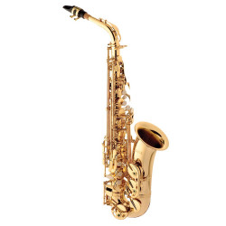
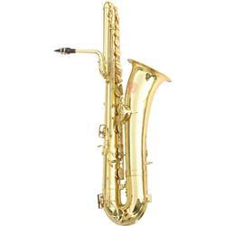

Instrumentos de Sopro
Nesta página, irei falar sobre os instrumentos de "Sopro.
Os instrumentos de madeira são também, instrumentos de sopro, ou seja, para produzirem som eles necessitam ser soprados.
O que diferencia os instrumentos de madeira dos outros instrumentos de sopro é a forma na qual são tocados.
Os de madeira produzem som através da vibração de uma palheta ou da passagem do ar entre o pequeno vão que a boquilha possui. Já os outros instrumentos de sopro, produzem som atráves da vibração dos lábios do músico quando em contato com o bocal.
Saiba mais sobre os instrumentos que usam bocal aqui: Metais
Os saxofones ou sax, são instrumentos de sopro transpositores, ou seja, as notas que eles produzem não são iguais as notas que estão na escrita. Alguns saxes possuem o formato parecido com a letra "J", outros são mais retos, se assemelhando às clarinetas. Eles possuem modelos com alturas difentes, veja mais sobre eles aqui!
As flautas são instrumentos de sopro que eram fabricadas com diversos tipos de madeira, porém, atualmente existem flautas feitas de metal ou plástico. As flautas também possuem alturas variadas, e cada tipo de flauta possui uma característica diferente. A maioria delas têm um formato semelhante a um cano cheio de furos. Veja mais sobre as flautas aqui!
Os outros instrumentos de madeira também possuem alturas variadas, modelos diferentes, formas diferentes e também podem variar na forma de serem tocados. Veja mais sobre alguns deles aqui!
Saxofones
Os saxofones são instrumentos que, apesar de estarem na família dos instrumentos de madeira, nunca foram contruído com este material. Desde sua criação, eles foram produzidos com metal, possuindo um tubo curvado e com furos, os quais possuem chaves e um mecanismo que fecha ou abre estes furos mudando o som de cada nota. A parte do sopro é igual aos outros instrumentos que utilizam palheta. Dentro da família de saxofone, existem modelos variados com alturas variadas. O sax soprano reto ou sax soprano curvo são os mais agudos da família, o sax alto é o segundo mais agudo, o sax tenor fica na região mediana, o sax barítono faz o grave tendo suporte para fazer o tenor, os saxes baixo e contra-baixo são os mais graves da família.
Sax soprano reto
Sax soprano curvo
Sax alto
Sax tenor

Sax barítono
Sax baixo
Flautas
As flautas são instrumentos de sopro feitos desde a antiguidade, vimos na página inicial que já foram encontradas flautas de ossos. Hoje em dia, temos flautas feitas de plástico, madeira, prata, ouro, e outros materiais. É possível fazer flautas em casa usando bambu, cano, etc. A flauta transversal é mais usada em orquestras, a flauta doce é a mais comum, servindo para entretenimento também, ele pode ser encontrada facilmente em lojas de brinquedo. A flauta pan é uma flauta composta por tubos de bambu, que são soprados e assim produzem os som da flauta.
"Flauta doce"
"*Soprano, contralto e tenor são iguais*"
"Flauta doce baixo"
Estes são os modelos de flauta transversal
Essa é a "flauta Pan"
Flauta feita de cano

clarinetas
A família das clarinetas é um grupo de instrumentos feitos, na maioria, de madeira. Eles possuem uma mecânica mais simples, tendo a boquilha com a palheta, onde será soprado e assim fará o som, possuem chaves e estes instrumentos possuem quatro registro, sendo eles o grave, médio, agudo e super-agudo.
Assim como os outros instrumentos citados anteriormente, as clarinetas possuem alguns modelos, sendo eles o clarinete(ou clarineta) - este é o mais agudo, o clarone alto - é mais grave do que o clariente, o clarone baixo - é o grave, e o clarone contra-baixo - é mais grave do que o clarone baixo.